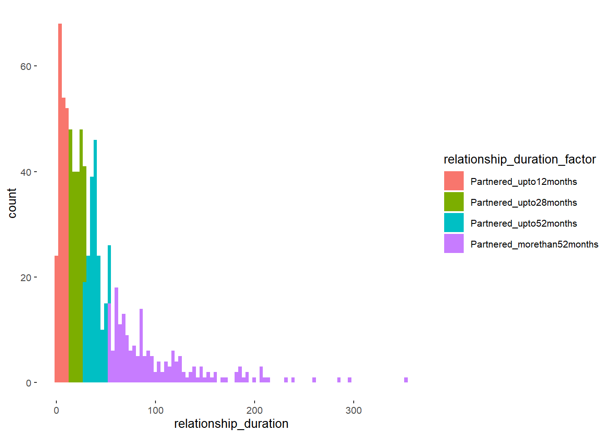
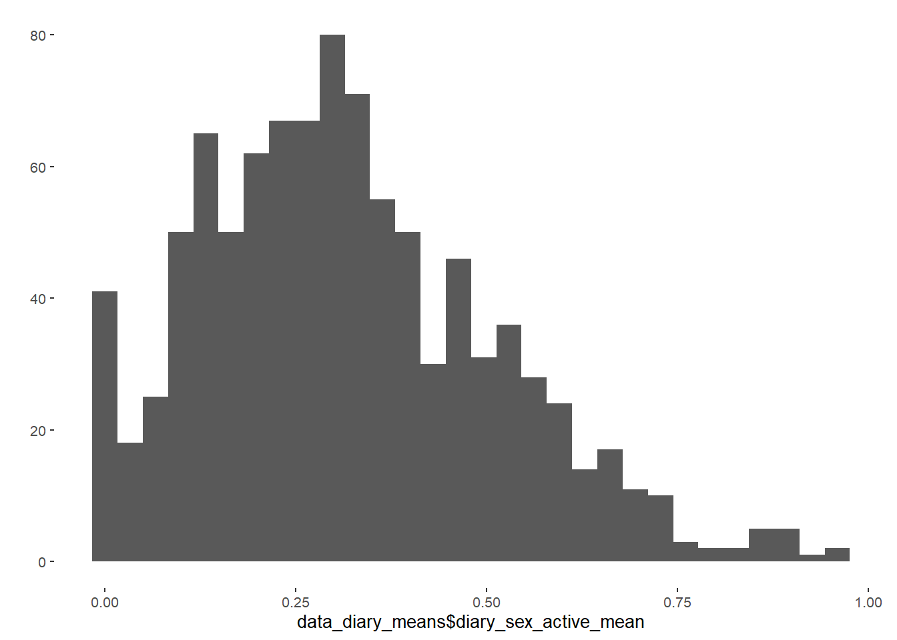
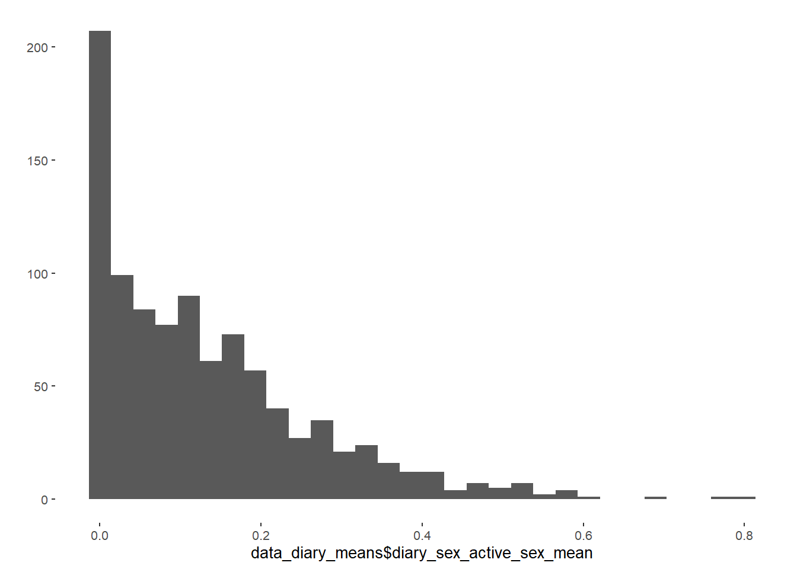

Datawrangling
Data and Functions
Select Variables
Initial Survey
data = all_surveys %>%
select(session,
age,
education_years,
net_income,
starts_with("bfi_agree"),
starts_with("bfi_consc"),
starts_with("bfi_open"),
starts_with("bfi_extra"),
starts_with("bfi_neuro"),
religiosity,
duration_relationship_years,
duration_relationship_month,
contraception_at_all,
contraception_method,
contraception_approach,
contraception_method_broad,
contraception_meeting_partner,
partner_attractiveness_face,
partner_attractiveness_body,
relationship_satisfaction_overall,
relationship_satisfaction_2,
relationship_satisfaction_3,
relationship_problems_R,
relationship_conflict_R,
satisfaction_sexual_intercourse,
reasons_for_exclusion)Diary
data_diary = diary %>%
select(session,
reasons_for_exclusion,
high_libido, sexual_desire_for_whom,
sex_active, sex_activity_anal_sex, sex_activity_bdsm_dom, sex_activity_bdsm_sub,
sex_activity_cuddling, sex_activity_cunnilingus, sex_activity_cybersex,
sex_activity_dirty_talk,
sex_activity_fellatio, sex_activity_kissing, sex_activity_masturbated_by_partner,
sex_activity_masturbated_partner, sex_activity_masturbation, sex_activity_other,
sex_activity_phone_skype_sex, sex_activity_pornography, sex_activity_sex,
sex_activity_touch_other,
sex_activity_toys, sex_activity_unclear, sex_other, sex_solo, sex_unclear,
days_done)Exclusion
Initial Survey
n_excluded = data %>% filter(reasons_for_exclusion != "") %>% nrow()
data = data %>% filter(reasons_for_exclusion == "")481 people were excluded.
Diary
Exclusion criteria based on initial
session_codes = data$session
data_diary = data_diary %>%
filter(session %in% session_codes)
length(data_diary$session)## [1] 53332The 1179 participants filled out 53332.
Skipped diary entry
n_skipped_diary = data_diary %>%
filter(reasons_for_exclusion %contains% "skipped_diary_entry") %>%
count()
data_diary = data_diary %>%
filter(!(reasons_for_exclusion %contains% "skipped_diary_entry"))745 days were skipped.
Dishonest answers
n_dishonest = data_diary %>%
filter(reasons_for_exclusion %contains% "dishonest") %>%
count()
data_diary = data_diary %>%
filter(!(reasons_for_exclusion %contains% "dishonest"))142 days contained dishonest answers.
Filled out less than 14 days
number_of_days = data_diary %>%
group_by(session) %>%
summarise(n = n()) %>%
rename(number_of_days = n)
data_diary = left_join(data_diary, number_of_days, by = "session")
data_diary_include = data_diary %>%
filter(as.numeric(number_of_days) >= 14)
data_diary_exclude = data_diary %>%
filter(as.numeric(number_of_days) < 14)
data_diary = data_diary_include170 participants were excluded because they filled out less than 14 days - resulting in 1014 excluded days.
Summary
In total 968 participants with 51431 diary days were included for the analyses in which outcomes were based on diary information.
Wrangle data
Income
Set factor level correctly
Relationship status (single vs partnered)
data = data %>% mutate(
relationship_status = ifelse(is.na(duration_relationship_month), "Single", "Partnered"))
qplot(data$relationship_status) + coord_flip()
Relationship duration
data = data %>%
mutate(relationship_duration = duration_relationship_years * 12 +
duration_relationship_month)
qplot(data$relationship_duration)
data = data %>%
mutate(relationship_duration_factor =
factor(ifelse(relationship_status == "Single",
"Single",
ifelse(relationship_duration <= 12,
"Partnered_upto12months",
ifelse(relationship_duration <= 28,
"Partnered_upto28months",
ifelse(relationship_duration <= 52,
"Partnered_upto52months",
ifelse(relationship_duration > 52,
"Partnered_morethan52months",
NA))))),
levels = c("Single", "Partnered_upto12months",
"Partnered_upto28months", "Partnered_upto52months",
"Partnered_morethan52months")))
qplot(data$relationship_duration_factor)
ggplot(data, aes(relationship_duration)) +
geom_histogram(aes(fill = relationship_duration_factor), bins = 100)
Contraception approach
data = data %>%
mutate(# Participants, who indicated having no penetrative sex:
contraception_method = if_else(contraception_at_all == 5,
"barrier_no_penetrative_sex",
contraception_method),
# Participants, who indicated having no penetrative sex
# use no contraceptives
contraception_approach = factor(ifelse(
contraception_method =="barrier_no_penetrative_sex",
"nothing",
as.character(contraception_approach))),
# Fixed contraception_approach for
# "hormonal_pill, barrier_coitus_interruptus"
contraception_approach = factor(ifelse(
contraception_method == "hormonal_pill, barrier_coitus_interruptus",
"hormonal_pill_only",
as.character(contraception_approach))),
# Fixed contraception_approach for
# "hormonal_pill, barrier_no_penetrative_sex"
contraception_approach = factor(ifelse(
contraception_method == "hormonal_pill, barrier_no_penetrative_sex",
"hormonal_pill_only",
as.character(contraception_approach))),
# Fixed contraception_approach for
# "hormonal_other, barrier_condoms"
contraception_approach = factor(ifelse(
contraception_method == "hormonal_other, barrier_condoms",
"hormonal_other+condoms",
as.character(contraception_approach))),
# Fixed contraception_approach for
# "hormonal_other, barrier_condoms, barrier_coitus_interruptus"
contraception_approach = factor(ifelse(
contraception_method ==
"hormonal_other, barrier_condoms, barrier_coitus_interruptus",
"hormonal_other+condoms",
as.character(contraception_approach))),
contraception_approach = factor(ifelse(
contraception_approach == "hormonal+barrier",
"hormonal_pill+condoms",
as.character(contraception_approach))),
contraception_approach = factor(ifelse(
contraception_method %contains% "awareness" &
contraception_method %contains% "condoms" &
!(contraception_method %contains% "hormonal"),
"awareness+condoms",
as.character(contraception_approach))))
data = data %>%
mutate(contraception_approach = factor(contraception_approach,
levels = c("hormonal_pill_only",
"hormonal_other_only",
"hormonal_pill+condoms",
"hormonal_other+condoms",
"barrier_pessar",
"awareness",
"awareness+condoms",
"condoms",
"other",
"nothing")))
qplot(factor(data$contraception_approach, levels = rev(levels(data$contraception_approach)))) +
coord_flip()
##
## hormonal_pill_only hormonal_other_only hormonal_pill+condoms hormonal_other+condoms
## 254 61 159 17
## barrier_pessar awareness awareness+condoms condoms
## 85 20 100 380
## other nothing
## 14 89Current contraceptive status (hormonal vs. non hormonal)
data = data %>% mutate(
contraception_hormonal = factor(ifelse(contraception_approach %contains% "hormonal",
"yes",
"no")))
qplot(data$contraception_hormonal) + coord_flip()
##
## no yes
## 688 491Changed contraception since meeting their partner
There will be NAs because we asked about contracetion when meeting partner only if participants were currently in a relationship
## contraception_meeting_partner
## contraception_hormonal 0 1 <NA>
## no 251 150 287
## yes 133 240 118data = data %>% mutate(
contraception_change_since_meeting_partner =
ifelse(contraception_hormonal == "yes" & contraception_meeting_partner == 1,
"congruent_hormonal",
ifelse(contraception_hormonal == "no" & contraception_meeting_partner == 0,
"congruent_nonhormonal",
ifelse(contraception_hormonal == "yes" & contraception_meeting_partner == 0,
"switched_to_hormonal",
ifelse(contraception_hormonal == "no" &
contraception_meeting_partner == 1, "switched_to_nonhormonal",
NA)))))
qplot(data$contraception_change_since_meeting_partner) + coord_flip()
Contraception meeting partner
Attractiveness Partner Scale
Relationship Satisfaction Scale
Diary information
Distinguish between solitary libido and dyadic libido in singles (was not measured for partnered women…).
## sexual_desire_for_whom
## high_libido 1 1, 2 1, 2, 3 1, 2, 3, 4 1, 2, 3, 4, 5 1, 2, 3, 4, 5, 6 1, 2, 3, 5 1, 2, 3, 5, 6 1, 2, 3, 6
## 0 0 0 0 0 0 0 0 0 0
## 1 1593 88 33 2 0 0 2 0 1
## 2 873 120 72 3 1 1 5 1 1
## 3 195 63 39 2 1 0 14 1 1
## 4 44 5 8 1 0 0 11 0 0
## <NA> 0 0 0 0 0 0 0 0 0
## sexual_desire_for_whom
## high_libido 1, 2, 4, 5 1, 2, 4, 6 1, 2, 5 1, 2, 6 1, 3 1, 3, 4 1, 3, 5 1, 3, 5, 6 1, 3, 6 1, 4 1, 4, 5
## 0 0 0 0 0 0 0 0 0 0 0 0
## 1 0 0 0 1 134 2 5 0 0 1 1
## 2 0 0 3 0 135 4 8 1 1 6 1
## 3 2 2 2 0 66 2 15 0 2 4 0
## 4 0 0 3 0 14 0 0 0 0 0 1
## <NA> 0 0 0 0 0 0 0 0 0 0 0
## sexual_desire_for_whom
## high_libido 1, 5 1, 6 2 2, 3 2, 3, 4 2, 3, 4, 5 2, 3, 4, 5, 6 2, 3, 5 2, 3, 5, 6 2, 3, 6 2, 4 2, 4, 5
## 0 0 0 0 0 0 0 0 0 0 0 0 0
## 1 34 2 207 75 3 0 0 2 0 0 6 0
## 2 29 0 176 216 10 0 1 13 0 1 7 0
## 3 10 1 87 225 6 1 0 24 3 2 9 1
## 4 8 0 15 77 3 2 0 8 1 1 1 0
## <NA> 0 0 0 0 0 0 0 0 0 0 0 0
## sexual_desire_for_whom
## high_libido 2, 4, 6 2, 5 2, 5, 6 2, 6 3 3, 4 3, 4, 5 3, 5 3, 5, 6 3, 6 4 4, 5 4, 6 5 5, 6
## 0 0 0 0 0 0 0 0 0 0 0 0 0 0 0 0
## 1 0 3 0 0 938 10 1 38 1 4 36 3 0 82 2
## 2 1 12 0 2 1167 15 1 71 0 5 34 5 1 85 2
## 3 0 11 2 0 820 13 0 67 0 3 30 6 0 42 2
## 4 0 5 0 0 330 6 0 42 0 0 10 3 0 18 2
## <NA> 0 0 0 0 0 0 0 0 0 0 0 0 0 0 0
## sexual_desire_for_whom
## high_libido 6 <NA>
## 0 0 21595
## 1 2 6965
## 2 5 7428
## 3 2 4538
## 4 0 1617
## <NA> 0 484# 1 = niemand bestimmtes
# 2 = mit mir selbst
# 3 = Bekannter/Freund
# 4 = Bekannte/Freundin
# 5 = Fremder
# 6 = Fremde
data_diary = data_diary %>%
mutate(high_libido_dyadic = ifelse(sexual_desire_for_whom >= 3, high_libido, NA),
high_libido_solitary = ifelse(sexual_desire_for_whom == 2, high_libido, NA))calculate mean of libido, sex_active_frequency and actual sex frequency based on diary
data_diary_means = data_diary %>%
group_by(session, number_of_days) %>%
summarise(diary_libido_mean = mean(high_libido, na.rm = T),
diary_libido_solitary_mean = mean(high_libido_solitary, na.rm = T),
diary_libido_dyadic_mean = mean(high_libido_dyadic, na.rm = T),
diary_sex_active_mean = mean(sex_active, na.rm = T),
diary_sex_active_sex_mean = mean(sex_activity_sex, na.rm = T),
diary_masturbation_mean = mean(sex_activity_masturbation, na.rm = T))
qplot(data_diary_means$diary_libido_mean)




data_diary_means = data_diary_means %>%
mutate(diary_sex_active_sex_sum = as.integer(diary_sex_active_sex_mean*number_of_days),
diary_sex_active_sum = as.integer(diary_sex_active_mean*number_of_days),
diary_masturbation_sum = as.integer(diary_masturbation_mean*number_of_days))
data = left_join(data, data_diary_means, by = "session")Set sex_freq and mas_freq as missing, if participants indicated having no penetrative sexual intercourse and using no other form of contraception
data = data %>%
mutate(diary_sex_active_sex_mean =
ifelse(contraception_method == "barrier_no_penetrative_sex",
NA,
diary_sex_active_sex_mean),
diary_sex_active_sex_sum =
ifelse(contraception_method == "barrier_no_penetrative_sex",
NA,
diary_sex_active_sex_sum),
diary_sex_active_mean =
ifelse(contraception_method == "barrier_no_penetrative_sex",
NA,
diary_sex_active_mean),
diary_sex_active_sum =
ifelse(contraception_method == "barrier_no_penetrative_sex",
NA,
diary_sex_active_sum),
diary_masturbation_mean =
ifelse(contraception_method == "barrier_no_penetrative_sex",
NA,
diary_masturbation_mean),
diary_masturbation_sum =
ifelse(contraception_method == "barrier_no_penetrative_sex",
NA,
diary_masturbation_sum))Select Data
